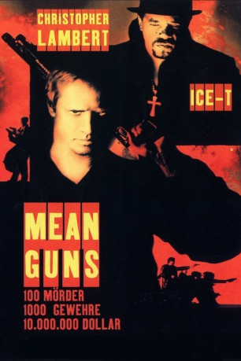

#5655 Mean Guns - Knast ohne Gnade
Alternativ: Mean Guns
 
 IMDB-Wertung: 5.7 / 10
IMDB-Wertung: 5.7 / 10  Metascore: 0
Metascore: 0 
Der Gangsterboss Vincent Moon hat einen perfiden Plan geschmiedet. Anstatt Feinde seiner kriminellen Organisation einzeln töten zu lassen, lässt er sie in ein neu errichtetes Hochsicherheitsgefängnis sperren. Dort gibt er den Insassen die Wahl: Entweder können sie auf ihren sicheren Tod warten oder aber sie kämpfen sich durch. Denn die letzten drei Überlebenden, erlangen nicht nur ihre Freiheit zurück, sondern auch ein Preisgeld von zehn Millionen Dollar. Dafür haben sie sechs Stunden Zeiten und ein gewaltiges Arsenal an verschiedensten Waffen zu Verfügung. Einer der Gefangenen ist der brutale, höchst-effiziente Auftragskiller Lou. Unter den Kontrahenten bilden sich schnell kleine Gruppen, um die Überlebenswahrscheinlichkeit zu erhöhen. Doch wem kann man in einem solchen Umfeld schon trauen?
Jahr: 1997
Dauer: 110 Minuten
FSK: 18
Land: USA Studio: Trimark Home VideoTonspuren: DD5.1 - ,
Untertitel: Deutsch,
Auflösung: 1080p (1920x788) Größe: 6092 MB
Genre: Action, Thriller, Krimi
Regisseur: Albert Pyun
Drehbuch: Christopher Bertolini
Soundtrack:
Darsteller:
 Christopher Lambert als Lou
Christopher Lambert als Lou- Ice-T als Vincent Moon
- Deborah Van Valkenburgh als Cam
 Yuji Okumoto als Hoss
Yuji Okumoto als Hoss Thom Mathews als Crow
Thom Mathews als Crow- Jerry Rector als Bob
- James Wellington als Ricky
- Hoke Howell als Commissioner Guildner
- John Machado als Fatboy
- Michael Halsey als Marcus
- Tina Cote als Barbie
- Kimberly Warren als D
- Hunter Doughty als Little Lucy
- James Mathers als Jerry Montegna
- Milan Nicksic als Kobolski
- Jahi J.J. Zuri als Blondie
- Kimko als Suit
- Jim Koehler als Slick
- Robert Lennon als Oslo
- Moss Mossberg als Biker
Datei: X:\FSK18-1900-1999\Mean Guns - Knast ohne Gnade (1997, FSK18, 1920x788).mkv seit 02.03.2017
Festplatte: FSK18
 Es gibt insgesamt 108 Filme in der Gruppe 'FSK18-1900-1999'
Es gibt insgesamt 108 Filme in der Gruppe 'FSK18-1900-1999'